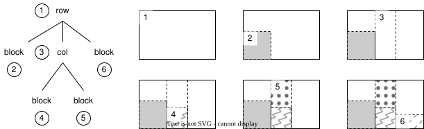

Page Layout
- A layout engine places page elements based on their size and organization.
- Page elements are organized as a tree of basic blocks, rows, and columns.
- The layout engine calculates the position of each block based on its size and the position of its parent.
- Drawing blocks on top of each other is an easy way to render them.
- Use multiple inheritance and mixin classes to inject methods into classes.
You might be reading this as HTML in your browser, as an e-book, or on the printed page. In all three cases a layout engine took some text and some layout instructions and decided where to put each character and image. To explore how they work, we will build a small layout engine based on Matt Brubeck's tutorial and on Pavel Panchekha and Chris Harrelson’s book Web Browser Engineering. Since our focus is layout, we will create objects ourselves to represent DOM nodes rather than parsing HTML.
14.1 Sizing
Let’s start on easy mode without margins, padding, line-wrapping, or other complications. Everything we can put on the screen is represented as a rectangular cell, and every cell is either a row, a column, or a block. A block has a fixed width and height:
class Block:
def __init__(self, width, height):
self.width = width
self.height = height
def get_width(self):
return self.width
def get_height(self):
return self.heightUpside Down
The coordinate systems for screens puts (0, 0) in the upper-left corner instead of the lower-left, so Y increases as we go down, rather than up (Figure 14.1). This convention dates back to teletype terminals that printed on rolls of paper; as Mike Hoye has observed, the past is all around us.

A row arranges one or more cells horizontally; its width is the sum of the widths of its children, while its height is the height of its tallest child (Figure 14.2):
class Row:
def __init__(self, *children):
self.children = list(children)
def get_width(self):
return sum([c.get_width() for c in self.children])
def get_height(self):
return max(
[c.get_height() for c in self.children],
default=0
)
Finally, a column arranges one or more cells vertically: its width is the width of its widest child and its height is the sum of the heights of its children. (Here and elsewhere, we use the abbreviation col when referring to columns.)
class Col:
def __init__(self, *children):
self.children = list(children)
def get_width(self):
return max(
[c.get_width() for c in self.children],
default=0
)
def get_height(self):
return sum([c.get_height() for c in self.children])Rows and columns nest inside one another: a row cannot span two or more columns, and a column cannot cross the boundary between two rows. We can therefore represent our document as a tree and calculate the width and height of each cell every time we need it. This is simple but inefficient: we could calculate both width and height at the same time and cache those values to avoid recalculation, but we called this “easy mode” for a reason.
As simple as it is, this code could still contain errors (and did during development), so we write some tests to check that it works properly before trying to build anything more complicated. One such test is:
def test_lays_out_a_grid_of_rows_of_columns():
fixture = Col(
Row(Block(1, 2), Block(3, 4)),
Row(Block(5, 6), Col(Block(7, 8), Block(9, 10)))
)
assert fixture.get_width() == 14
assert fixture.get_height() == 2214.2 Positioning
Once we know how big cells are, we can figure out where to put them. Suppose we start with the upper-left corner of the browser: upper because we lay out the page top-to-bottom and left because we are doing left-to-right layout. If the cell is a block, we place it there. If the cell is a row, on the other hand, we get its height and then calculate its lower edge as y1 = y0 + height. We then place the first child’s upper-left corner at (x0, y1-height0), the second child’s at (x0 + width0, y1-height0), and so on (Figure 14.3). Similarly, if the cell is a column, we place the first child at (x0, y0), the next at (x0, y0 + height0), and so on.

To save ourselves some work, we will derive the classes that know how to do layout from the classes we wrote before. Basic blocks are:
class PlacedBlock(Block):
def __init__(self, width, height):
super().__init__(width, height)
self.x0 = None
self.y0 = None
def place(self, x0, y0):
self.x0 = x0
self.y0 = y0
def report(self):
return [
"block",
self.x0, self.y0,
self.x0 + self.width, self.y0 + self.height
]The constructor and reporting method for the PlacedCol class looks much the same. Its placement method is:
while the placement method for rows is:
Once again, we write and run some tests to check that everything is doing what it’s supposed to. One such test is:
def test_places_a_column_of_two_blocks():
fixture = Col(Block(1, 1), Block(2, 4))
fixture.place(0, 0)
assert fixture.report() == [
"col",
0, 0, 2, 5,
["block", 0, 0, 1, 1],
["block", 0, 1, 2, 5],
]14.3 Rendering
We drew blocks on graph paper to figure out the expected answers for the tests shown above. We can do something similar in software by creating a “screen” of space characters and having each block draw itself in the right place. If we start at the root of the tree, children will overwrite the marks made by their parents, which will automatically produce the right appearance (Figure 14.4). (A more sophisticated version of this called z-buffering used in 3D graphics keeps track of the visual depth of each pixel to draw objects correctly regardless of their order.)

Our “screen” is a list of lists of characters, with one inner list for each a row on the screen. (We use lists rather than strings so that we can overwrite characters in place.)
def make_screen(width, height):
screen = []
for i in range(height):
screen.append([" "] * width)
return screenWe will use successive lower-case characters to show each block, i.e., the root block will draw itself using ‘a’, while its children will be ‘b’, ‘c’, and so on.
def draw(screen, node, fill=None):
fill = next_fill(fill)
node.render(screen, fill)
if hasattr(node, "children"):
for child in node.children:
fill = draw(screen, child, fill)
return fill
def next_fill(fill):
return "a" if fill is None else chr(ord(fill) + 1)To teach each kind of cell to render itself, we derive new classes from the ones we have and give each of those new classes a render method with the same signature. Since Python supports multiple inheritance, we can do this with a mixin class (Figure 14.5). The Renderable mixin is:
class Renderable:
def render(self, screen, fill):
for ix in range(self.get_width()):
for iy in range(self.get_height()):
screen[self.y0 + iy][self.x0 + ix] = fillUsing it, the new cell classes are simply:
class RenderedBlock(PlacedBlock, Renderable):
pass
class RenderedCol(PlacedCol, Renderable):
pass
class RenderedRow(PlacedRow, Renderable):
pass(Not) The Right Way to Do It
If we were building a real layout engine, we would go back and create a class called
Cellwith thisrendermethod, then derive ourBlock,Row, andColclasses from that. In general, if two or more classes need to be able to do something, we should add the required method to their lowest common ancestor. We’ve chosen not to do that in this case both to show when and why mixin classes are sometimes useful, and so that we can build and test code incrementally.
Simple tests are a little easier to read using rendering, though we still had to draw things on paper to figure out what to expect:
def test_renders_a_column_of_two_blocks():
fixture = Col(Block(1, 1), Block(2, 4))
fixture.place(0, 0)
expected = "\n".join(["ba", "cc", "cc", "cc", "cc"])
assert render(fixture) == expectedThe fact that our tests are difficult to understand is a sign that we should do more testing. It would be very easy for us to get a wrong result and convince ourselves that it was correct; this kind of confirmation bias is very common in software development.
14.4 Wrapping
One of the biggest differences between a browser and a printed page is that the text in the browser wraps automatically as the window is resized. (The other, these days, is that the printed page doesn’t spy on us, though someone is undoubtedly working on that.)
The first step in adding wrapping to our layout engine is to fix the width of a row. If the total width of the children is greater than the row’s width, the layout engine needs to wrap the children around. This assumes that columns can be made as tall as they need to be, i.e., that we can grow vertically to make up for limited space horizontally. It also assumes that none of a row’s children is wider than the width of the row so that each can fit in a row of its own if necessary. We will look at what happens when this isn’t true in the exercises.
Our layout engine manages wrapping by transforming the tree. The height and width of blocks are fixed, so they become themselves. Columns become themselves as well, but since they have children that might need to wrap, the class representing columns needs a new method:
class WrappedBlock(PlacedBlock):
def wrap(self):
return self
class WrappedCol(PlacedCol):
def wrap(self):
return PlacedCol(*[c.wrap() for c in self.children])(The * in front of the list being passed to PlacedCol in the last line of the code above is another use of the spreading introduced in Chapter 2.)
Rows do all the hard work. Each original row is replaced with a new row that contains a single column with one or more rows, each of which is one “line” of wrapped cells (Figure 14.6). This replacement is unnecessary when everything will fit on a single row, but it’s easiest to write the code that does it every time; we will look at making this more efficient in the exercises.

Our new wrappable row’s constructor takes a fixed width followed by the children and returns that fixed width when asked for its size:
class WrappedRow(PlacedRow):
def __init__(self, width, *children):
super().__init__(*children)
assert width >= 0, "Need non-negative width"
self.width = width
def get_width(self):
return self.widthWrapping puts the row’s children into buckets, and then converts the buckets to a row of a column of rows:
To bucket the children, we add them one at a time to a temporary list. If adding another node would make the total width of the nodes in that list too large, we use that node to start a new temporary list:
Once again, we bring forward all the previous tests and write some new ones to test the functionality we’ve added:
def test_wrap_a_row_of_two_blocks_that_do_not_fit_on_one_row():
fixture = WrappedRow(3, WrappedBlock(2, 1), WrappedBlock(2, 1))
wrapped = fixture.wrap()
wrapped.place(0, 0)
assert wrapped.report() == [
"row",
0, 0, 2, 2,
[
"col",
0, 0, 2, 2,
["row", 0, 0, 2, 1, ["block", 0, 0, 2, 1]],
["row", 0, 1, 2, 2, ["block", 0, 1, 2, 2]],
],
]We could have had columns handle resizing rather than rows, but we (probably) don’t need to make both resizeable. This is an example of intrinsic complexity: the problem really is this hard, so something has to deal with it somewhere. Programs often contain accidental complexity as well, which can be removed if people are willing to accept change. In practice, that often means that it sticks around longer than it should.
The Liskov Substitution Principle
We are able to re-use tests as our code evolved because of the Liskov Substitution Principle, which states that it should be possible to replace objects in a program with objects of derived classes without breaking anything. In order to satisfy this principle, new code must handle the same set of inputs as the old code, though it may be able to process more inputs as well. Conversely, its output must be a subset of what the old code produced so that whatever is downstream from it won’t be surprised. Thinking in these terms leads to the methodology called design by contract discussed in Chapter 2.
14.5 Summary
Figure 14.7 summarizes the ideas introduced in this chapter. Real page layout systems do far more than what we have described, but all of them implement some kind of negotiation between containers and content.

14.6 Exercises
14.6.1 Refactoring
Refactor the classes used to represent blocks, rows, and columns so that:
They all derive from a common parent class.
All common behavior is defined in that parent (if only with placeholder methods).
14.6.2 Removing Spreads
The code shown in this chapter makes heavy use of varargs and spreading, i.e., uses * to spread the values of lists to match parameters and *children to capture multiple arguments. Rewrite the code to use lists instead. Do you find your rewritten code easier to understand?
14.6.3 Recycling
Modify the wrapping code so that new rows and columns are only created if needed. For example, if a row of width 10 contains a text node that is only 4 characters wide, a new row and column are not inserted.
14.6.4 Rendering a Clear Background
Modify the rendering code so that only the text in block nodes is shown, i.e., so that the empty space in rows and columns is rendered as spaces.
14.6.5 Clipping Text
Modify the wrapping and rendering so that if a block of text is too wide for the available space, the extra characters are clipped. For example, if a column of width 5 contains a line “unfittable”, only “unfit” appears.
Extend your solution to break lines on spaces as needed in order to avoid clipping.
14.6.6 Bidirectional Rendering
Modify the existing software to do either left-to-right or right-to-left rendering upon request.
14.6.7 Equal Sizing
Modify the existing code to support elastic columns, i.e., so that all of the columns in a row are automatically sized to have the same width. If the number of columns does not divide evenly into the width of the row, allocate the extra space as equally as possible from left to right.
14.6.8 Properties
Look at the documentation for Python’s @property decorator and modify the block classes to replace the get_width and get_height methods with properties called width and height.
14.6.9 Drawing Borders
Modify the existing code so that elements are drawn with borders like this:
+----+
|text|
+----+14.6.10 Padding Elements
Modify the existing code so that:
Authors can define a
paddingattribute for row and column elements.When the node is rendered, that many blank spaces are added on all four sides of the contents.
For example, string "text" with a padding of 1 would render as:
+------+
| |
| text |
| |
+------+where the lines show the outer border of the rendering.
14.6.11 Tables
Add another node type Table such that:
All the children of a table must be rows.
Every row must contain exactly the same number of columns.
When the table is rendered, every column has the same width in every row.